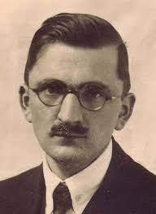
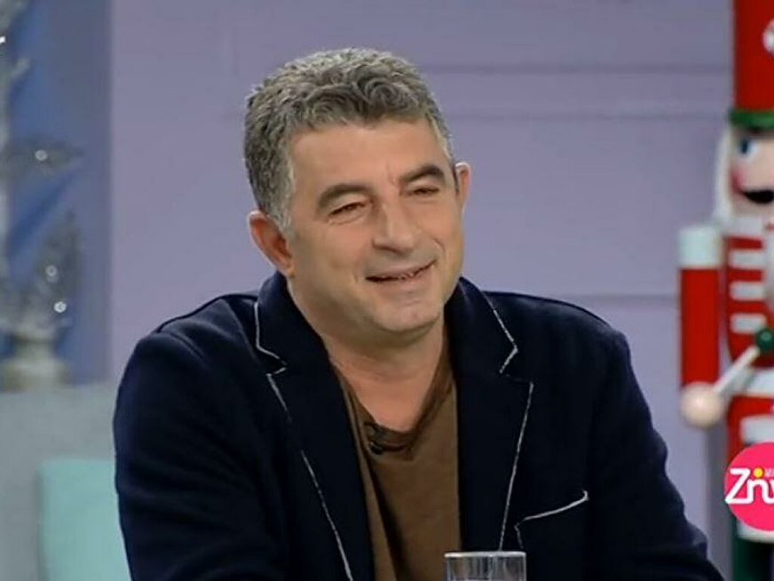
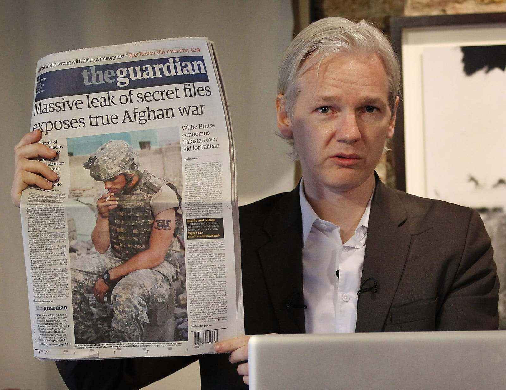

Un aspetto di cui spesso ci si dimentica di parlare e che ha in qualche modo caratterizzato l’ambiente civile durante la seconda guerra mondiale è la Stampa.
La libertà di stampa è il diritto di ciascun individuo alla libera manifestazione delle proprie idee mediante la parola, lo scritto o qualsiasi altro mezzo di comunicazione e diffusione.
Essa non può per nessun motivo essere sottoposta ad autorizzazioni o limitazioni, men che meno a censure .
>
Durante il periodo nazista peró , come molti altri aspetti sociali, è stata assoggettata al dominio tedesco e ha portato all’occultamento delle azioni dello Stato e della verità dei fatti .
Ció è stato possibile grazie al ‘PROGRAMMA DEL PARTITO NAZISTA’ del 1920, un documento comprensivo di 25 punti enunciati da Hitler durante la prima riunione pubblica che si tenne a Monaco di Baviera
il 24 febbraio 1920 nei quali vi sono racchiuse le idee politiche e civili del partito nazionalsocialista dei lavoratori (NSDAP).
Le conseguenze di tali provvedimenti furono disastrose in quanto mantennero volontariamente la popolazione tedesca all’oscuro dei campi di concentramento e di tutte le malefatte compiute .
La limitazione della libertà di espressione non è un fenomeno strettamente correlato all’epoca nazista, ma è molto diffuso tutt’oggi e in tutto il mondo .
Essendo uno dei diritti inalienabili di cui ogni individuo deve poter godere liberamente si sono create delle vere e proprie lotte contro ogni tipologia di censura .
Battersi per la libertà è sicuramente un compito non facile, specialmente se attraverso l’utilizzo della parola. Capita sempre più frequentemente che chiunque provi ad opporsi viene preso di mira da governi dittatoriali, dei quali si sente molto parlare e che sono oggetto di dibattito sempre maggiori sui giornali o nella rete.
Giornalisti, blogger, o semplici cittadini-reporter che documentano quotidianamente ingiustizie e atrocità vengono oscurati, repressi, messi a tacere prima con la censura, e, a volte, addirittura, con la morte se insistono nelle loro indagini.
Tutto ciò perché il potere della carta stampata e soprattutto quello della rete è diventato talmente forte che i governi e gli organi statali si sentono minacciati e rispondono con l’unica arma che possiedono: la forza.
E alla fine lo scontro è duro, libertà di espressione contro armi e prigionia.
E nonostante la legge oggi tuteli la libertà di pensiero, di espressione e di stampa, in molti Stati ciò non è ancora un diritto acquisito e palese.
Articolo 23 del programma del partito nazista:
“Noi chiediamo la lotta legale contro le menzogne politiche consapevoli e contro la loro diffusione a mezzo della stampa.
Per rendere possibile la creazione di una stampa tedesca, noi chiediamo:
che tutti i redattori e collaboratori di giornali pubblicati in lingua tedesca debbano essere connazionali (Volksgenossen)
;
che i giornali non tedeschi debbano ottenere, per esser pubblicati, una espressa autorizzazione dello Stato; e che non possano venire stampati
in lingua tedesca;
che ogni partecipazione o influenza finanziaria su giornali tedeschi da parte di non tedeschi venga vietata legalmente,
e che la violazione di questa norma venga punita con la chiusura del giornale e con l’immediata espulsione dal Reich delle persone non tedesche
implicate.
I giornali che contrastano
con l’interesse della comunità devono essere vietati.
Noi chiediamo la lotta legale contro una organizzazione artistica e letteraria che
esercita un influsso disgregatore sulla nostra vita nazionale, e chiediamo la chiusura delle istituzioni che violano i principi sopra esposti”.
Storie di Ieri...

Fritz Michael Gerlich
Fritz Michael Gerlich nacque il 15 febbraio 1883 a Stettin, in Germania. Fu uno dei più importanti giornalisti tedeschi dell’epoca,
nonchè esponente della resistenza tedesca antinazista negli anni Trenta. Era inoltre membro effettivo dell’opposizione tedesca e della
Rosa Bianca , un gruppo di opposizione alla dittatura nazista basato sui valori cristiani. Viene ricordato come uno dei pochi che ebbe il
coraggio di opporsi pubblicamente a Hitler. La sua lotta contro il nazionalsocialismo fu condotta principalmente attraverso il giornale da lui
pubblicato a partire dal 1932: "Der Gerade Weg” (La retta via), con il sottotitolo “Periodico tedesco per la verità e la giustizia”.
Gerlich fu sostenitore, attraverso i suoi studi storici, del fatto che se il nazionalismo di per sé era stato già in passato un disastro
per la Germania, combinato con l’ideologia hitleriana sarebbe stato una catastrofe non solo per il Paese ma per l’intera Europa.
Espose la sua verità contro il Reich in maniera forte e diretta, seppure ben consapevole dei rischi che stava correndo;
definì il Führer un “mentecatto”, pubblicò su di lui vignette ironiche e provocatorie e fu quasi profetico nello scrivere:
“Il nazismo è destinato a crollare molto prima del comunismo: il suo destino è scoppiare come una bolla di sapone, perché
in nessuna parte del suo programma si ispira alle grandi correnti di pensiero dell’umanità”. A poche settimane dall’ascesa
al potere di Hitler, il 9 marzo, Gerlich fu arrestato dalle squadre d'assalto, le Sturmabteilungen di Ernst Röhm, e incarcerato a Monaco.
Il suo giornale venne bandito quattro giorni dopo. Torturato ferocemente dai suoi carnefici reagì dicendo: “Non mi uccido, sono cattolico”.
Gerlich non ricevette alcuna accusa formale e non fu mai processato. Dopo 15 mesi di prigione, nella “Notte dei Lunghi Coltelli”,
il 30 giugno del 1934, venne portato a Dachau e fucilato. Fu proibito ai giornali di darne notizia e alla moglie di pubblicare un annuncio funebre.
FONTE
Articolo 21 della costituzione italiana :
“Tutti hanno diritto di manifestare liberamente il proprio pensiero con la parola, lo scritto e ogni altro mezzo di diffusione.
La stampa non può essere soggetta ad autorizzazioni o censure.
Si può procedere a sequestro soltanto per atto motivato dell’autorità giudiziaria nel caso di delitti, per i quali la legge sulla stampa
espressamente lo autorizzi, o nel caso di violazione delle norme che la legge stessa prescriva per l’indicazione dei responsabili.
In tali casi, quando vi sia assoluta urgenza e non sia possibile il tempestivo intervento dell’autorità giudiziaria, il sequestro della
stampa periodica può essere eseguito da ufficiali di polizia giudiziaria, che devono immediatamente, e non mai oltre ventiquattro ore,
fare denunzia all’autorità giudiziaria.
Se questa non lo convalida nelle ventiquattro ore successive, il sequestro s’intende revocato
e privo d’ogni effetto.
La legge può stabilire, con norme di carattere generale, che siano resi noti i mezzi di finanziamento della stampa periodica.
Sono vietate le pubblicazioni a stampa, gli spettacoli e tutte le altre manifestazioni contrarie al buon costume.
La legge stabilisce provvedimenti adeguati a prevenire e a reprimere le violazioni”.
e di Oggi.

Giorgios Karaivaz
Uno dei casi di cronaca che ha maggiormente scosso l’opinione pubblica europea nell’ultimo periodo è quello di Giorgios Karaivaz,
un noto giornalista greco trovato morto, lo scorso 9 aprile, nei pressi della sua abitazione ad Alimo, nella periferia sud di Atene
Karaivaz iniziò a svolgere la professione di giornalista nel 1989. Era specializzato nel giornalismo investigativo , in particolar modo
in inchieste riguardanti il mondo delle forze dell’ordine, e proprio su questi temi aveva costruito la sua carriera, collaborando negli anni
con varie emittenti televisive e diverse testate giornalistiche. Negli ultimi tempi si occupava principalmente di criminalità organizzata e
di corruzione; conduceva un programma sul canale Star Tv ed era proprietario di un blog online, bloko.gr.,
nel quale era solito scrivere le informazioni che aveva raccolto. Secondo le prime ricostruzioni della scena del crimine,
Karaivaz è stato ucciso da due uomini a bordo
di una moto, i quali gli hanno sparato, uccidendolo, senza lasciare alcuna traccia, se non i bossoli rinvenuti successivamente sulla scena
del crimine.
Stando a quanto riferito dalla polizia, il giornalista non aveva
reso noto di aver ricevuto minacce o intimidazioni,
nonostante ciò gli investigatori credono che il cronista
sia stato assassinato per motivi legati alla sua attività giornalistica.
L’avvenimento ha sconvolto l’intero
Paese, il governo greco, i partiti di opposizione e il sindacato dei giornalisti ha condannato l’attacco e dichiarato che farà il possibile per
indagare e scoprire
che cosa è successo. Anche le massime autorità europee si sono dette scioccate e si sono espresse in merito a quanto accaduto,
in particolare la presidentessa della Commisisone europea , Ursula Von Der Leyen, ha definito l’uccisione di Karaivaz come
“un atto atroce e codardo” , ricordando che l’Europa rappresenta la
libertà,
che la libertà di stampa è la più sacra di tutte e che i giornalisti devono essere in grado di lavorare in tutta sicurezza.
Ad oggi ancora non si è stabilito che
cosa ci sia di nascosto dietro a questa vicenda, ma la credenza generale è che Karaivaz sia stato messo a
tacere per sempre dalla criminalità organizzata.
Il è ancora irrisolto. La vicenda di Karaivaz non è un caso isolato, egli è ufficialmente il sesto giornalista in tutto
il mondo ucciso nella prima metà del 2021, secondo il bilancio di Reporter senza Frontiere. Ricordiamo la giornalista investigativa
Daphne Caruana Galizia, il giornalista slovacco Jan Kuciak e la reporter attivista ventinovenne Lyra Mckee e purtroppo la lista è ancora lunga.
Ciò che si chiede è usare tutte le misure possibili per identificare gli esecutori o i mandanti e fare in modo che tali episodi non si verifichino più.

Julian Paul Assange
è un giornalista, programmatore e
attivista australiano, cofondatore e caporedattore
dell';organizzazione divulgativa WikiLeaks.
Nel 2010 ha
acquistato particolare notorietà internazionale per aver
rivelato tramite WikiLeaks documenti statunitensi
secretati, ricevuti dalla ex militare Chelsea Manning,
riguardanti crimini di guerra commessi dalle forze
armate statunitensi; per tali rivelazioni ha ricevuto
svariati encomi da privati e personalità pubbliche,
onorificenze ed è stato ripetutamente proposto per il
Premio Nobel per la pace per la sua attività di
informazione e trasparenza.
Nel 2010 il tribunale di Stoccolma emise un mandato
d';arresto nei suoi confronti con l';accusa di stupro e
molestie.
Assange negò l';accusa sostenendo che fosse
solo un pretesto per estradarlo dalla Svezia agli Stati
Uniti a causa del suo ruolo nella pubblicazione di
documenti statunitensi segreti.
Tale pubblicazione porta
ad un';importante domanda: "L’hackeraggio può definirsi
una forma di giornalismo?”.
L’interrogativo merita una
risposta: sì, è grande giornalismo se, come in questo
caso, i documenti smascherano le bugie di coloro che
sono al potere.
È grande giornalismo se i documenti
hanno un interesse pubblico perché dimostrano quanto
chi era al potere abbia mentito sui fatti dell';Afghanistan
e de dell’Iraq.
Conseguentemente, nel giugno 2012 la Corte Suprema
britannica rigettò il ricorso presentato contro il via libera
all';estradizione ed Assange scelse di recarsi presso
l';ambasciata dell';Ecuador a Londra, chiedendo asilo
politico in quanto perseguitato.
Successivamente l';Ecuador rese noto d';aver concesso ad
Assange la cittadinanza ecuadoriana; nel frattempo erano
occorsi anche tentativi di attribuirgli l';immunità
diplomatica in quanto divulgatore di informazioni
trasparenti di interesse pubblico, al fine di poter lasciare
l';Ambasciata senza incorrere in arresti.
Nel 2019, una serie di controversie con i nuovi
rappresentanti dell';autorità dell';Ecuador, sfociarono
repentinamente in una inusuale revoca dell';asilo politico.
In questo modo l';Ecuador acconsentì agli agenti della
polizia metropolitana di Londra di entrare in
Ambasciata e prelevare Assange contro la sua volontà,
senza rispettare il fatto che egli fosse in possesso della
cittadinanza di quello Stato.
Da allora è incarcerato nel Regno Unito presso la Her
Majesty Prison Belmarsh.
Tale detenzione,particolarmente dura e severa, ha
suscitato forte protesta e appelli per il rilascio da parte
dell';opinione pubblica e di svariate organizzazioni per i
diritti umani, poichè Assange, fondamentalmente,
rappresenta un simbolo della libertà di stampa e
d';espressione.
Anche il relatore ONU sulla tortura si è
espresso sulla questione dichiarando che Assange deve
essere rilasciato e la sua estradizione deve essere negata
poichè non è altro che un assalto su larga scala al diritto
alla libertà d’espressione e di stampa e la richiesta di
estradizione si basa su accuse derivanti dalla diffusione
di documenti riservati nell’ambito del lavoro
giornalistico.
Rendere pubbliche e conoscere informazioni del genere,
ovvero di interesse pubblico, è un dovere dei giornalisti e
un diritto dei cittadini in quanto tali, poichè soltanto
una stampa libera e senza limitazioni può svelare
efficacemente l’inganno di un governo.
É responsabilità e
dovere dei giornalisti impedire a qualsiasi istituzione
governativa di ingannare le persone.
Perciò tutto questo dovrebbe essere oggetto di protezione
e non di criminalizzazione.
Solamente il 5 gennaio 2021 la giustizia inglese negò
l';estradizione di Assange per motivi di natura medica,
nello specifico per il bene della sua salute mentale poiché
alto è il rischio di tendenze suicide.
FONTI:
wikipedia - Amnesty international - Il fatto
quotidiano - adnkronos
IL CASO DELL’ETIOPIA
La libertà di stampa in Etiopia dal 1995 al 2018 ha
vissuto un grande periodo buio.
Questi anni sono
caratterizzati dalle varie riforme contro la libertà di
stampa, promosse dal dittatore Meles Zenawi e dal
primo ministro Hailemariam Desalegn, in carica da
dopo la morte di Meles Zanawi nel 2012 fino al 2018.
In questo periodo molti giornalisti che lottavano per i
propri diritti e che si opponevano alle riforme promosse
contro la libertà di stampa furono arrestati con l’accusa
di terrorismo, così come i molti esponenti di vari partiti
politici.
Il carcere per le accuse di terrorismo era quello di
Maekelawi, che si trova ad Addis Abeba, capitale
dell’Etiopia; definito da Amnesty International ‘ una
camera delle torture usata dalle autorità etiopiche per
interrogare con brutalità chiunque osi dissentire,
compresi manifestanti e giornalisti’.
Fortunatamente il
carcere venne chiuso nel 2018 con l’arrivo del primo
ministro Abiy Ahmed.
Una testimonianza importante l’abbiamo da Eskinder
Nega, un giornalista etiope, che ha pubblicato numerosi
articoli richiamando il proprio Paese alla necessità di
riforme democratiche, e ciò gli è costato una condanna
a 18 anni di prigione a causa della legge antiterrorismo
approvata nel 2009.
Il primo ministro Hailemariam Desalegn, durante il suo
governo, fece chiudere 72 giornali, incluso quello dove
lavorava Nega, che fu arrestato insieme ad altri 9
giornalisti per aver denunciato la repressione delle
proteste antigovernative del 2005.
Per il governo di Addis Abeba i giornalisti condannati
sono terroristi a causa dei loro articoli che “incitavano il
pubblico a portare le rivolte del Nord Africa e dei Paesi
arabi anche in Etiopia’’.
Nega fu rilasciato nel settembre del 2012, dopo 14 mesi
di prigionia; alla sua liberazione ha denunciato la
situazione nel carcere, nel quale erano presenti più di
200 persone, tenute in un ambiente sporco, con solo tre
bagni e pochi letti disponibili.
Nega affermò, infatti, che
per la poca disponibilità dei letti molte persone erano
costrette a dormire per terra.
Dal 2019 ad oggi con il nuovo primo ministro, e premio
Nobel per la pace, Abiy Ahmed, l’Etiopia affronta
finalmente un periodo di cambiamento.
Abiy Ahmed ha infatti liberato prigionieri politici e
giornalisti, sancendo la libertà di stampa ed ha avviato
varie riforme democratiche e politiche.
Si spera che con
Abiy Ahmed al governo ci possa essere una ‘nuova alba’
per la libertà di stampa.
Fonti:
osservatoriodiritti.it
Amnesty International
nigrizia.it
gariwo.net